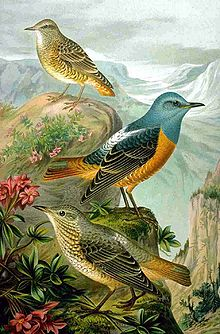
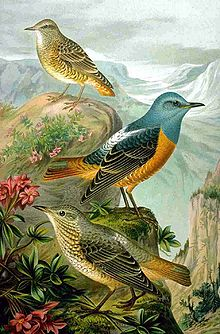

| Rock Thrush | |
|---|---|
|  | |
| Male (center), female (below) and young bird (top). Public domain image from 1905 handbook. | |
| Conservation status | |
| Binomial name | |
| Monticola saxatilis (Linnaeus, 1766, Switzerland) |
| Rock Thrush | |
|---|---|
|  | |
| Male (center), female (below) and young bird (top). Public domain image from 1905 handbook. | |
| Conservation status | |
| Binomial name | |
| Monticola saxatilis (Linnaeus, 1766, Switzerland) |
The Rufous-tailed Rock Thrush or just Rock Thrush (Monticola saxatilis) is a member of the thrush family Turdidae.
It breeds in southern Europe across central Asia to northern China. This species is strongly migratory, all populations wintering in Africa south of the Sahara. It is an uncommon visitor to northern Europe. Its range has contracted somewhat at the periphery in recent decades due to habitat destruction. For example, in the early 20th century it bred in the Jura Krakowsko-Częstochowska (Poland) where none occur today,[2] but it is not considered globally endangered.[1]
This is a medium-sized but stocky thrush 17–20 cm in length. The summer male is unmistakable, with a blue-grey head, orange underparts and outer tail feathers, dark brown wings and white back. Females and immatures are much less striking, with dark brown scaly upperparts, and paler brown scaly underparts. The outer tail feathers are reddish, like the male.[3]
This species breeds in open dry hilly areas, usually above 1500 m. It nests in rock cavities, laying 4-5 eggs. It is omnivorous, eating a wide range of insects, berries and small reptiles. The male Rock Thrush has a clear and tuneful song.[3]

{kind=link}